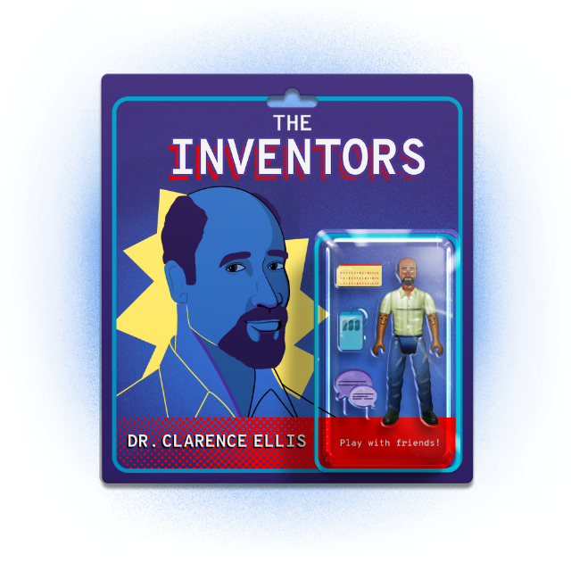

Subscribe to the podcast to receive new episodes as soon as we release them
Season 6, Episode 5
Dr. Clarence Ellis: The Developer Who Helped Us Collaborate

It’s not easy to learn how to use computers when you can’t actually touch them. But that’s how Dr. Clarence Ellis started his career of invention—which would ultimately lead to reimagining how we all worked with computers and each other.
Martez Mott describes the “Mother of all Demos” that would inspire a generation of builders. Gary Nutt recounts working with Dr. Clarence Ellis at Xerox PARC, and the atmosphere at the coveted research lab. Chengzheng Sun and Paul Curzon explain how Operational Transformation—the project to which Dr. Ellis devoted so much time and effort—laid the foundation for the collaborative tools many of us use every day. And Delilah DeMers shares how humble her father was, and how he loved teaching people that technology can be a force for good.
00:03 - Saron Yitbarek
It's 1959 and Clarence Ellis, a shy and quiet 15-year-old, is working the graveyard shift at a Chicago manufacturing firm called Dover. His job title is “computer operator”, but he's actually not allowed to touch the computer. The real reason they hired him? To be a night watchman. Scare away vandals and thieves. But all that changes tonight.
There's a problem with Dover's giant mainframe, an ILLIAC. The staff can't process the payroll, and people are going to get fired if it's not ready by morning. The higher-ups are panicking, but young Clarence Ellis isn't.
00:52 - Saron Yitbarek
Turns out, that teenage boy has been reading computer manuals on all those graveyard shifts to pass the time, and he's mastered in his head, the mainframe's thousands of vacuum tubes and punch cards. He lifts the hood, disables the parity check circuitry and saves the day. Biographer Daniel Morse.
01:20 - Daniel Morse
He was immediately considered a member of the ILLIAC team at Dover. He was allowed to use the computers and learn more about them from that point forward and even teach many of the staff.
01:33 - Saron Yitbarek
So there was something special about this particular 15-year-old, and he wasn't about to squander that potential either. A decade later, Clarence Ellis became the first Black person to earn a PhD in computer science in America ever. He didn't put it to work at the Dover Corporation, though. He cast his net wider. Because the boy who wasn't allowed to touch the computer was going to help millions make contact with computers of their own. I'm Saron Yitbarek, and this is Command Line Heroes, an original podcast from Red Hat.
02:13 - Saron Yitbarek
All season long, we've been exploring the lives and inventions of heroes who changed our tech landscape while never quite getting the credit they deserve. Computer scientists and programmers and hardware wizards who weren't always invited to the table. In this episode, we're focusing on someone who didn't just earn himself a seat at that table, he invited the whole world to join him, too. That teenager from the South Side of Chicago was going to deliver the collaborative software that got all of us working together.
02:51 - Mother of All Demos
If, in your office, you as an intellectual worker were supplied with a computer that was alive for you all day, and was instantly responsive to every action you had, how much value could you derive from that?
03:06 - Saron Yitbarek
In 1968, Douglas Engelbart delivered what was later named the Mother of All Demos. Stanford Research Institute was showing off a prototype machine that included windows, hypertext, graphics, word processing — all the humanizing elements of computing that we take for granted today. Engelbart's demo became a rallying cry for a whole new age of computing, an age where computers stopped being abstract machines that only a few professionals could interface with. Instead, these computers met humans on their own level. Dr. Martez Mott from Microsoft Research explains how the mother of all demos inspired computer scientists like Clarence Ellis to look beyond the command-line interface that had dominated their work.
03:59 - Martez Mott
We can have kind of like a different paradigm of computing. We don't have to kind of be limited to this command-line interface. We can have a much more expressive and unique, much more understandable, user experience.
04:13 - Saron Yitbarek
Mott points out that the changes Ellis witnessed back in the late '60s — the advances that humanized computing — were so fundamental, they would shape tech for decades after.
04:25 - Martez Mott
And I'm pretty sure if you took someone who was using Windows 95 and put them in a time machine and they came out in 2020, the same kind of core tenants of how we interact with computer systems wouldn't be too different. The core ways of being able to move files around, be able to interact with different objects in different ways, are all still pretty much the same. And that's really based off this really early work that a lot of computer scientists did in the late '60s and '70s.
04:53 - Saron Yitbarek
When a copier company called Xerox decided to create the Palo Alto Research Center (PARC), it was partly with the goal of answering Douglas Engelbart's questions. What could a person accomplish with a humanized computer? How personable could this experience become?
05:11 - Martez Mott
You had this kind of team of people who were looking at computing in a different way, in a much more broader, more general way.
05:18 - Saron Yitbarek
When he arrived at Xerox PARC in 1976, Clarence Ellis was a quiet thinker, pretty reserved by all accounts. Xerox PARC was an ideal place for a young scientist like that to come into his own. Gary Nutt, who worked with Ellis at PARC, explains.
05:37 - Gary Nutt
So they built their research center across the street from Stanford. At PARC, you didn't have to do anything. You got a private office, you got your own computer, and that was a big deal in the '70s. But at PARC, all you have to do is think, and you never got dinged if you didn't publish anything. So it was an enviable place. It was heaven for a computer researcher. Everybody really wanted to go there. So then you were on the leading edge of personal computers, of what you see is what you get (WYSIWYG) screens, bitmap screens, ethernet was invented with DEC at PARC.
06:25 - Gary Nutt
All of that stuff was happening, all of the leading edge software for distributed computing was coming out of there, all of the ARPANET protocols for networks. So it was unbelievable.
06:39 - Saron Yitbarek
And it was in that playground of burgeoning tech that Clarence Ellis quietly began re-imagining what working on a computer could mean. There were two groups at PARC: The Computer Science Lab focused on horizontal technology—they invented the Alto, the Bravo editor, the desktop, and icons. All that graphic user interface (GUI) stuff that Steve Jobs found so attractive. There was a lot of overlap between the teams, and those who were there say Clarence Ellis contributed crucial elements to the GUI work, helping out on the creation of icons and the visual of desktop.
07:21 - Saron Yitbarek
But, officially, he worked over in the System Science Lab where they focused on things like artificial intelligence and office automation. There, Ellis began working on an experimental system designed to automate office procedures, which came to be known as Office Talk. Gary Nutt remembers working with Ellis on a later iteration of Office Talk. He calls him by his lifelong nickname, Skip.
07:49 - Gary Nutt
It was going to be a new kind of a system, and it was going to be based on a graphic model that users would automate their procedures. So, for example, preparing an invoice. We would write models of what the code would look like if a person were to try to automate that procedure. So we worked intensely for the summer on the modeling operation. Skip was the theory guy sort-of thinking about what were kind-of strange ways that we could do this stuff, and I was building the systems.
08:31 - Saron Yitbarek
For example, this early attempt was tackling sending that invoice down a pipeline of computerized steps, instead of wasting hours of human labor shuffling paper around an office. But they were scraping the surface of a much, much larger problem. When you start asking multiple workstations to coordinate their work, new technical roadblocks suddenly emerge. Their system could track a job as it moved from person to person, but each transaction had to exist as an “atomic transaction”, sealed off on its own and pausing the whole system. There was no real time concurrency. And that missing ingredient, the ability to co-edit in real-time, was going to become the holy grail of collaborative software.
09:21 - Saron Yitbarek
Ellis and Nutt laid out the problem in a journal article at the time.
09:26 - Gary Nutt
We were describing what the real technical problems were in collaborative systems to the computer science technical community. We were saying, “Look guys, there's all kinds of problems here that need to be solved, and this is going to be a thing of the future. It's a big deal.”
09:46 - Saron Yitbarek
By 1980, Gary Nutt and Clarence Ellis had both resigned from Xerox PARC, hoping to solve those technical problems elsewhere. For Ellis, that meant taking a job at MCC, the Microelectronics Computer and Technology Corporation. While the folks at Xerox PARC were chasing down the GUI that Douglas Engelbart had teased at the Mother of All Demos, Ellis was going to chase down another more obscure part of that vision.
Not a lot of people had noticed at the time, but during the Mother of All Demos, Engelbart had also shown a rickety, very early version of a collaborative real-time text editor. And that was the piece of the larger dream that Clarence Ellis was pursuing next.
10:42 - Saron Yitbarek
The term groupware was coined in 1978 by Peter and Trudy Johnson-Lenz. And their definition pointed towards something pretty profound. Groupware was going to create a computer-mediated culture. It would be, in their words, “an embodiment of social organization in cyberspace.” That was what Clarence Ellis was chasing when he arrived at MCC. But the roadblock was still there. Without an embodiment of social organization, where one person's actions interact seamlessly with another's… well, it wasn't going to happen.
11:21 - Saron Yitbarek
At MCC, Ellis dove into theory to solve the problem. How could multiple users work in a single space, a document for example, without having their actions interfere with each other? The breakthrough came in 1989 when Ellis and his fellow MCC colleague, Simon Gibbs, wrote a paper describing what they called Operational Transformation, or OT. A new algorithm was proposed that allowed for total concurrency control. In other words, with Operational Transformation, you could have multiple users editing a document simultaneously, and the changes wouldn't trip each other up.
12:04 - Saron Yitbarek
One user's changes would be transformed so that they no longer interfered with another user's simultaneous changes. It's one of those forgotten breakthroughs that today we hardly notice. Dr. Chengzheng Sun was a computer science professor at Nanyang Technological University, and is now the chief scientist at Codox Corporate — a startup producing co-editing software. As a prominent OT researcher, he worked with Ellis and other groupware pioneers during this time.
12:37 - Chengzheng Sun
OT was the underlying technology for supporting real time co-editing. Real time requires that users see each other's edits, character by character in text editing instantly. Not waiting for hours, days, or weeks. They need to see each other's work instantly. Fine-grain sharing is a requirement.
13:08 - Saron Yitbarek
It sounds pretty straightforward, but the implications are enormous. With real-time co-editing, new operations become possible. OT resolves conflicts among multiple operations that target the same piece of text. It maintains consistency between multiple instances of the document. It allows for group undo and operation compression. And we should point out that all this was made possible without any really complex communication protocols, which means OT technology could mask any network latency. Professor Paul Curzon at Queen Mary University of London has studied human-computer interaction for decades.
13:54 - Saron Yitbarek
He gave us a bit more detail on how OT works.
13:58 - Paul Curzon
If you and I were working on a collaborative document, we see our local version and essentially, as we make changes, if I delete a character or you add a new character or command, we're working concurrently in parallel, and doing that is deviously difficult. So what Operational Transformation is in essence is doing is taking those commands, those observations you're asking to be done on the surface copy of the document, and transforming them to allow them to work, even when somebody else is making changes that might be moving the character around.
14:40 - Saron Yitbarek
All this came together in a pioneering program by Ellis called GROVE, which stands for Group Outline Viewing Edit. GROVE, released in 1989, was the first implementation of his Operational Transformation. Dr. Sun.
14:59 - Chengzheng Sun
In some sense, GROVE is a proof of concept of OT implementation.
15:06 - Saron Yitbarek
It was the first step toward a field of collaborative software that would one day remake our work lives. Here's how Curzon describes the OT breakthrough.
15:16 - Paul Curzon
It's a much, much deeper, closer relationship of working on a document together. Instead of just having to take turns, you really are working on the documents at the same time. I mean, that is revolutionary. Basically, if you were in a room working on something together, you would be doing it very collaboratively and in parallel in real time. So this is an example of technology that actually allows people to work in a very, very natural way.
15:50 - Saron Yitbarek
That groupware goal of embodying social interaction online started to look achievable. But Clarence Ellis, as much as he did see the value in this, he probably couldn't have guessed just how important groupware would become. Dr. Sun.
16:10 - Chengzheng Sun
Some of those researchers, including myself, had believed that OT and real-time co-editing could be potentially useful in the real world, and worked hard towards this direction. However, many other people in the field didn't share this view. And to my knowledge, no one had actually imagined that OT would be widely adopted.
16:44 - Saron Yitbarek
Keep in mind: computer networks in 1989 were in their infancy. And it was only as those networks grew that collaborative software would have a place to thrive. No network – no groupware. Obviously, the networks got there eventually. The podcast you're listening to right now, for example, was made during the COVID pandemic and our team was never in the same room. In fact, I'm in New Jersey and my producer is all the way in LA, and we work in the same Google Doc to produce these episodes. So this episode would have been impossible without the collaborative software Ellis helped produce.
17:27 - Saron Yitbarek
While we were making this episode and bouncing around in our shared work docs, we started to notice a lot of similarities between Ellis' old GROVE software and the tech we use today. I mean on GROVE, you could determine read-and-write permissions by user. You could tell who was in the document at any time because their faces and names displayed. You could even access previous versions of the text. Sound familiar? To us, the GROVE system from the 1990s looks a lot like Google Docs in the 2020s. And it turns out, there's a very good reason for that.
18:10 - Saron Yitbarek
Dr. Sun told us we were right to see echoes of GROVE in today's Google Docs. Because, turns out, the Operational Transformation that Clarence Ellis used in GROVE – that same idea – was baked into Google Docs back in 2009.
18:26 - Chengzheng Sun
OT nowadays, in the form of different algorithms, is the underlying cornerstone of the vast majority of today's working co-editors, including Google Docs, among others. Google adopted OT as the core technology for their Google Wave prototypes.
18:51 - Saron Yitbarek
This is the legacy of Operational Transformation. Ellis went on to mentor a whole new generation of OT pioneers, including Dr. Sun himself. And that meant his work would live on in a whole ecosystem of groupware today.
19:08 - Chengzheng Sun
Dr. Ellis has been well respected in the OT and the co-editing research community. Not only because he was the pioneer of OT, but also, he has served as a great mentor to newer OT researchers, including myself. I have learned a great deal from him and have always regarded Dr. Ellis as a great collaborator, mentor, and friend.
19:42 - Paul Curzon
Anything where two people are working in the same document at the same time, whether that document's a diagram, a paint program, more recently code editing—anything where you're trying to work in real time in the same way, essentially the same kind of problem has got to be solved.
20:03 - Saron Yitbarek
OT and Ellis' vision have brought to life some of our most fundamental computer experiences. And, as Curzon points out, it's not just editing either. Anything that involves concurrent, real-time manipulation in a shared environment is made better by OT.
20:24 - Saron Yitbarek
Whether it's in Google Suite or DropBox Paper or agile development platforms, like the one TenCent uses, collaborative software and OT is woven into our lives. We forget how radical it was just a couple of decades ago. When Ellis and his peers first proposed these kinds of platforms, some people freaked out. The whole idea of collaborative editing for example: everybody reading and writing at the same time? Chaos! But Ellis was able to imagine a new shared workspace. He imagined it being a whole mode of working that didn't yet exist. And I can't imagine living without it.
21:07 - Saron Yitbarek
And Curzon wants the next generation to understand that Clarence Ellis–a man who, remember, started out as a computer operator, who wasn't even allowed to touch the mainframe, a guy who struggled against the odds to become the first Black person to earn a PhD in computer science in America – that Clarence Ellis really has managed to shape our world.
21:35 - Paul Curzon
A large part of my job involves helping inspire kids about computer science. The subject has always had this stereotype that computer scientists are very white, male, when that isn't actually the reality. So, I started looking for role models that I could write about. And so I just stumbled across the story of Clarence Ellis and was really surprised that I hadn't actually heard of him before. So I think he ought to be a lot more well-known. I mean, to be involved in both graphical user interfaces being designed, and collaborative editing tools, being at the forefront of both of those different technologies is in itself pretty amazing.
22:28 - Saron Yitbarek
Ellis' daughter, Delilah DeMers, told us her father probably wouldn't have been that comfortable with all that extra recognition, though. He was a pretty humble guy. In fact, DeMers had no idea what her dad had accomplished when she was younger. Later in his life though, after his days at Xerox PARC and after he'd left MCC, she saw Ellis continue that same work — the work of bringing people together, letting them collaborate, and finding a human-centered approach to computers. And she saw her dad do that work in a profound new way.
23:05 - Delilah DeMers
He was basically going to retire from the university, but he had gotten a grant to help another colleague who was originally from Africa start a university there. He was very dedicated to that. Like later in life, he would go over there for basically the whole school year and teach. He also brought folk dancing over there. He would also teach a dance class in the evening—if students wanted to come, they could. It was like an extracurricular activity, I guess. So I know he was very dedicated to that later on in life, to Ashesi University in Ghana.
23:51 - Saron Yitbarek
Gary Nutt feels that Ellis really came out of his shell during that period. He changed from a more reserved thinker, to someone who helped others collaborate through software, to finally someone who was inspired to collaborate and connect himself.
24:07 - Gary Nutt
After 2000, Skip kind of became a new Skip. What he started doing is looking outward more than for himself. That's when Skip actually began to give back to the Black communities. He first started visiting HBUs, historically Black universities. He also began to think about teaching itself. How can you use collaborative systems to do collaborative teaching, for example. That grew and grew and grew, and so he helped all of the HBUs in the country and then he began to visit African universities.
24:49 - Saron Yitbarek
For the last two decades of his life, Ellis left his quiet research behind him and became an advocate for Black universities in the U.S. and elsewhere. Because, while he may have been the first Black person to get a PhD in computer science in America, he knew he wasn't the last. Clarence Ellis had come a long way from the graveyard shift at Dover Manufacturing, he was a global citizen and a Fulbright scholar. As his daughter mentioned, Ellis would fly back and forth to Africa, Ghana especially, the home of his ancestors. He wanted to keep lifting people up and bringing them together—a mission that had characterized his whole career. Then on May 17, 2014 on the flight back home from Ghana, Ellis died unexpectedly at age 71.
Oh yeah—and Ellis didn't just open up to the academic community. He made other connections in a “folk” community that some of his old computer science colleagues might never have guessed.
26:00 - Gary Nutt
So, Skip had a whole other world, and we never found out about it until literally the day of his funeral. We thought when we went to the funeral that it was just going to be all full of the computer science people, but we were way outnumbered by the folk dancers. So, he loved the research and he loved the intensity of it. In the other world, he's a guy who's willing to try every new dance step and to get people to join in dancing.
26:35 - Saron Yitbarek
Clarence Ellis used to tell people, “The computer is not just a machine, it can help someone.” And that's what he was pushing for, right up to the end. From a teenager who wanted more from this workplace, to an esteemed scholar who helped millions join the conversation at work and at school. Ellis' story teaches us that there's always a way, if we try, for more people to get on the same page.
You can dive deep into Ellis' original papers on Operational Transformation along with lots of great bonus material on collaborative editing over at redhat.com/commandlineheroes.
27:20 - Saron Yitbarek
Next time, we track a pioneer's journey from 1930s Missouri to the computer revolution he led at Hewlett Packard. It's the inspiring story of scientist, politician, and entrepreneur Roy Clay. Command Line Heroes is an original podcast from Red Hat. Until next time, I'm Saron Yitbarek. Keep on coding.